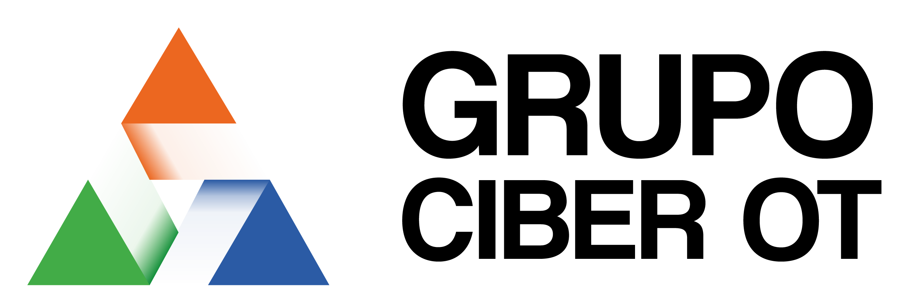

Consultoría e ingeniería especializada en ciberseguridad para entornos de Tecnología Operacional (OT). Apoya a las organizaciones en la evaluación de riesgos, protección de activos industriales y fortalecimiento de la seguridad de sus operaciones críticas.
Conocer CMC360GRUPOCIBEROT
Integramos TI, OT e IoT para fortalecer la ciberseguridad y la continuidad operacional.
GrupoCiberOT es un holding tecnológico que integra capacidades de ciberseguridad, ingeniería y tecnología para ayudar a las organizaciones a proteger sus infraestructuras críticas y fortalecer la seguridad de sus operaciones.
Abordamos los desafíos de los entornos industriales y corporativos mediante una visión integrada de las Tecnologías de la Información (TI), las Tecnologías de Operación (OT) y el Internet de las Cosas (IoT), conectando capacidades especializadas para gestionar riesgos, mejorar la resiliencia y favorecer la continuidad operacional.
Protección de
infraestructuras críticas Gestión de riesgos
tecnológicos Cumplimiento y
seguridad regulatoria Continuidad y resiliencia
operacional Integración de capacidades
TI, OT e IoT Experiencia en entornos
industriales
infraestructuras críticas Gestión de riesgos
tecnológicos Cumplimiento y
seguridad regulatoria Continuidad y resiliencia
operacional Integración de capacidades
TI, OT e IoT Experiencia en entornos
industriales
UN HOLDING, CAPACIDADES COMPLEMENTARIAS
Nuestro grupo: capacidades complementarias
GrupoCiberOT reúne capacidades especializadas en ciberseguridad, ingeniería, tecnología e integración de sistemas para responder a los desafíos de organizaciones industriales y corporativas.
A través de la colaboración entre empresas y especialistas, articulamos soluciones que consideran la seguridad de los entornos tecnológicos, la protección de infraestructuras críticas y la continuidad de los procesos operacionales.
Ingeniería, desarrollo de proyectos y automatización industrial para apoyar la integración tecnológica y la ejecución de soluciones en entornos industriales.
Conocer FyH Ingenieros
Integramos capacidades de ciberseguridad, ingeniería y tecnología para conectar los entornos TI, OT e IoT y fortalecer la seguridad y continuidad de las operaciones.
Conocer nuestras soluciones